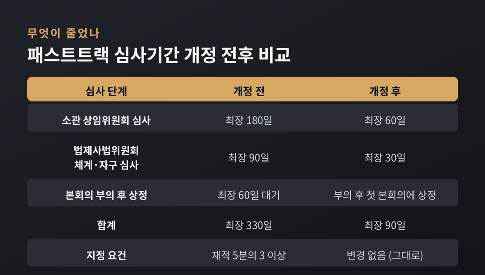
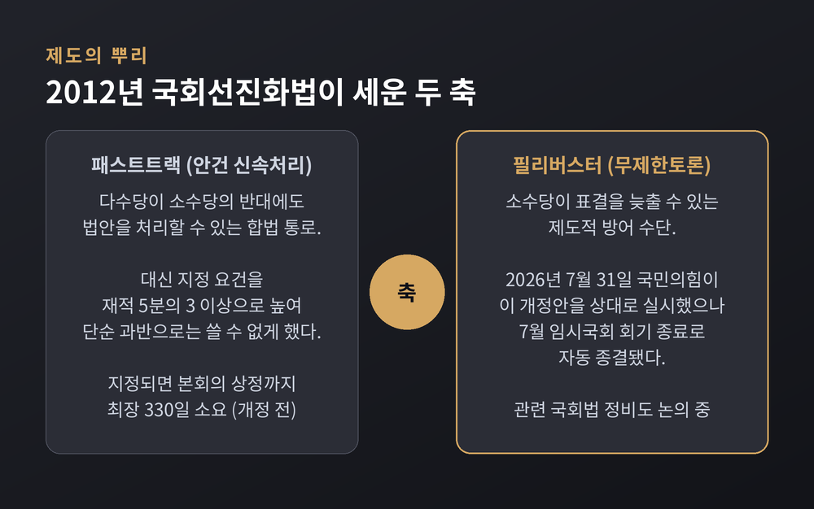
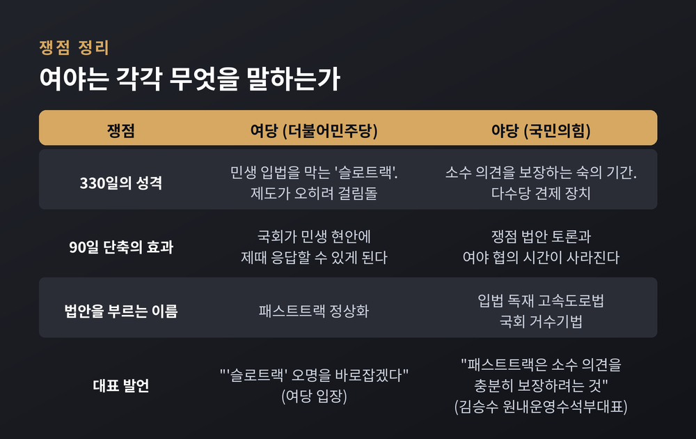
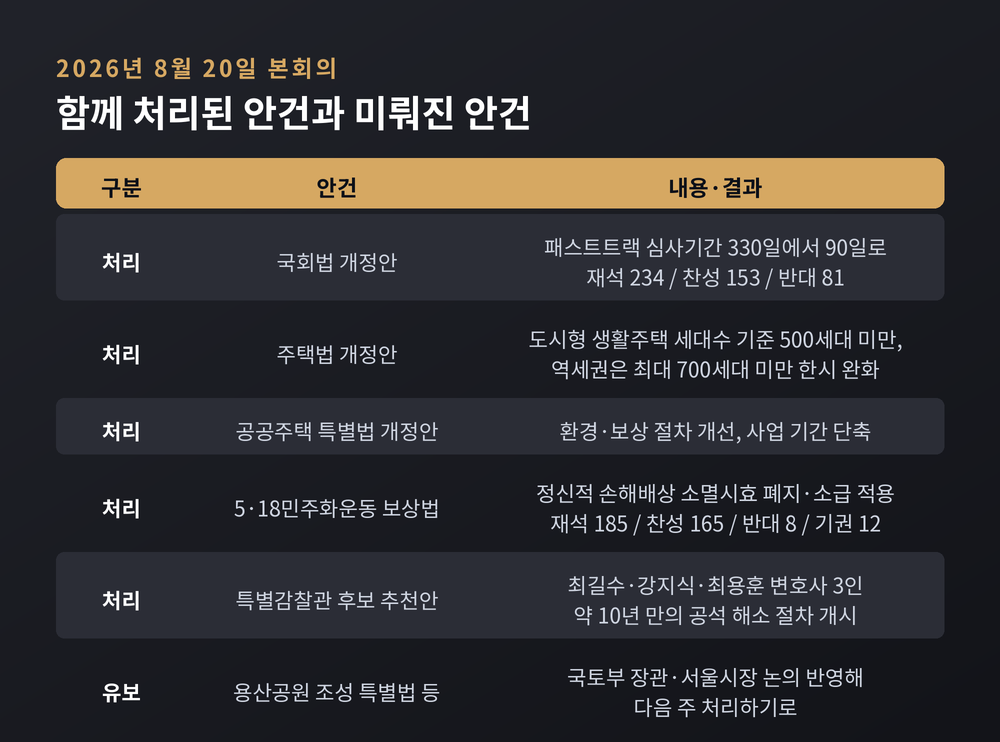
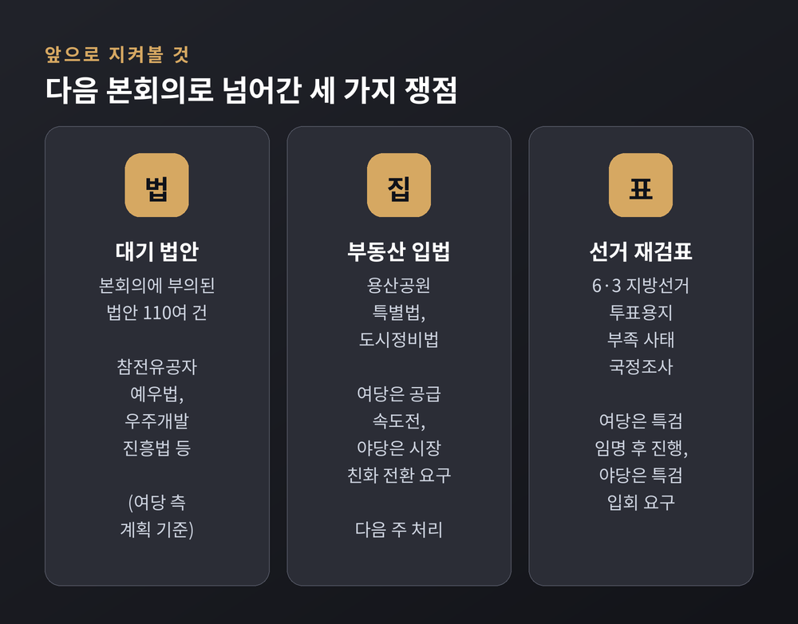

2026년 8월 20일 국회 본회의에서 국회법 개정안 하나가 통과됐습니다. 패스트트랙, 즉 신속처리안건의 심사 기간을 최장 330일에서 90일로 줄이는 내용입니다. 이 글에서는 개정안이 정확히 무엇을 바꾸는지, 그 제도가 원래 왜 만들어졌는지, 여야는 각각 무엇을 근거로 맞서는지를 차례로 정리하겠습니다.
국회는 이날 제438회 국회 제1차 본회의를 열었습니다. 8월 임시국회의 첫 본회의였습니다. 국회법 개정안은 재석 의원 234명 가운데 찬성 153명, 반대 81명으로 가결됐습니다. 사회는 조정식 국회의장이 봤습니다.
표결 양상은 뚜렷했습니다. 여당인 더불어민주당 의원들이 찬성에, 국민의힘을 비롯한 야당 의원들이 반대에 몰렸다는 것이 언론의 공통된 분석입니다.
이 법안이 이날 처리된 데는 앞선 사정이 있습니다. 개정안은 지난 7월 31일 이미 본회의에 상정됐습니다. 국민의힘이 무제한토론, 곧 필리버스터로 맞섰습니다. 그런데 7월 임시국회 회기가 종료되면서 필리버스터가 자동으로 끝났습니다. 국회법 규정에 따라 법안은 다음 회기의 첫 본회의에 자동 상정됐고, 그것이 8월 20일이었습니다.
의결 이후의 공포일과 시행일은 확인된 보도에서 명시되지 않았습니다. 이 부분은 아직 단정하기 어렵습니다.
숫자만 보면 240일이 사라졌습니다. 하지만 한 덩어리가 통째로 잘린 것은 아닙니다. 세 단계가 각각 줄었습니다.
먼저 소관 상임위원회의 심사 기한이 최장 180일에서 60일로 단축됩니다. 다음으로 법제사법위원회의 체계·자구 심사가 최장 90일에서 30일로 줄어듭니다. 마지막 단계의 변화가 가장 큽니다. 예전에는 법안이 본회의에 부의된 뒤에도 최장 60일을 더 기다려야 했습니다. 지금은 부의된 뒤 처음 열리는 본회의에 곧바로 상정됩니다. 대기 기한이 사실상 없어진 셈입니다.

여기서 짚어둘 대목이 하나 있습니다. 패스트트랙에 올리는 문턱 자체는 이번에 바뀌지 않았습니다. 안건을 신속처리대상으로 지정하려면 여전히 국회 재적 의원 5분의 3 이상, 또는 소관 상임위원회 재적 위원 5분의 3 이상의 찬성이 필요합니다.
바뀐 것은 '들어가는 조건'이 아니라 '들어간 뒤의 속도'입니다. 이 구분이 이번 논쟁의 출발점입니다.
제도의 뿌리는 2012년으로 거슬러 올라갑니다. 2012년 5월 2일, 18대 국회의 마지막 본회의에서 이른바 국회선진화법이 처리됐습니다. 형식은 국회법 개정안이었습니다.
당시 문제의식은 두 가지였습니다. 하나는 본회의장의 몸싸움이었습니다. 다른 하나는 다수당의 일방적 강행 처리, 이른바 날치기였습니다. 국회선진화법은 이 둘을 한꺼번에 막으려 했습니다.
그래서 제도도 두 축으로 짜였습니다. 한쪽에는 안건 신속처리제도, 곧 패스트트랙이 놓였습니다. 다수당이 소수당의 반대에도 법안을 처리할 수 있는 합법적 통로입니다. 대신 지정 요건을 재적 5분의 3 이상으로 높여 단순 과반으로는 쓸 수 없게 했습니다. 반대쪽에는 필리버스터가 놓였습니다. 소수당이 표결을 늦출 수 있는 방어 수단입니다.

330일이라는 기간은 이 설계 안에서 나왔습니다. 상임위 최장 180일, 법사위 최장 90일, 본회의 부의 후 최장 60일. 지연을 위한 장치가 아니라 "다수가 밀어붙이더라도 1년 가까이는 논의하라"는 숙의 강제 장치에 가까웠습니다.
실제로 쓰인 사례도 있습니다. 2019년 4월 말, 공수처 설치법과 검경 수사권 조정안, 선거제 개혁안이 잇따라 패스트트랙에 지정됐습니다. 공직선거법 개정안은 2019년 12월 27일, 공수처법은 12월 30일, 검경 수사권 조정안은 이듬해 1월 13일에 통과됐습니다. 상한인 330일보다는 짧은, 약 8개월의 여정이었습니다. 다만 그 과정에서 물리적 충돌이 벌어져 국회선진화법의 취지가 무색해졌다는 평가도 함께 남았습니다.
이번 개정을 두고 양측의 주장은 정면으로 갈립니다. 양쪽 논리를 그대로 옮기면 이렇습니다.
여당 측 주장. 민주당은 패스트트랙이 오히려 신속한 법안 처리의 걸림돌이 되고 있다고 봅니다. 여당은 "'슬로트랙'이라는 오명이 붙은 패스트트랙을 90일로 단축해 국회가 민생 현안에 제때 응답할 수 있도록 바로잡겠다"고 밝혔습니다. 신속처리제도라는 이름을 달고 있으면서 1년 가까이 걸리는 구조 자체가 모순이라는 것입니다. 부동산 공급대책 후속 입법을 더 미루기 어렵다는 현실적 판단도 배경으로 지목됩니다.
야당 측 주장. 국민의힘은 이 법을 "입법 독재 고속도로법"이자 "국회 거수기법"이라고 불렀습니다. 정점식 원내대표는 본회의 전 의원총회에서 "다수당의 입법 강행 처리 속도를 더 높이는 입법 독재 고속도로법"이라고 비판했습니다. 앞서 7월 29일 국회 운영위원회 전체회의에서 김승수 원내운영수석부대표는 "패스트트랙은 소수 의견을 충분히 보장하려는 것"이라고 말했습니다. 심사 기간이 90일로 줄면 쟁점 법안을 놓고 충분히 토론하거나 여야가 협의할 시간이 사라진다는 우려입니다.

제도 자체에도 양면이 있습니다. 심사 기간이 짧아지면 시급한 민생 법안이 회기에 갇혀 폐기되는 일은 줄어듭니다. 반대로 충분한 검토 없이 처리된 법안의 부작용은 나중에 드러납니다. 어느 쪽 손해가 더 큰지는 앞으로 이 제도가 어떤 법안에 쓰이느냐에 달려 있습니다.
이날 본회의가 대치만으로 채워진 것은 아닙니다. 여야가 합의한 법안 70여 건이 함께 통과됐습니다.
정부의 9·7 부동산 공급대책 후속 법안들이 포함됐습니다. 주택법 개정안은 도시형 생활주택의 세대수 기준을 500세대 미만으로 완화하고, 역세권은 최대 700세대 미만까지 한시적으로 허용합니다. 공공주택 특별법 개정안은 공공주택 사업의 환경·보상 절차를 개선하고 사업 기간을 줄이는 내용입니다.
5·18민주화운동 보상법 개정안도 통과됐습니다. 정신적 손해배상청구권의 소멸시효를 없애고, 법 시행 전에 시효가 완성된 사람에게도 적용하도록 했습니다. 재석 185명 중 찬성 165명, 반대 8명, 기권 12명이었습니다. 표결 구도가 국회법 개정안과 사뭇 달랐다는 점이 눈에 띕니다.
특별감찰관 후보 3명에 대한 추천안도 의결됐습니다. 민주당은 최길수 변호사를, 국민의힘은 강지식 변호사를, 대한변호사협회는 최용훈 변호사를 각각 추천했습니다. 이재명 대통령이 추천서를 받은 날부터 사흘 안에 한 명을 지명하고 인사청문회를 거치면, 2016년 9월 이후 약 10년간 비어 있던 자리가 채워집니다.

반면 미뤄진 것도 있습니다. 용산공원 조성 특별법 개정안과 도시정비법 개정안 등이 상정되지 않았습니다. 천준호 민주당 원내운영수석부대표는 김승수 국민의힘 원내운영수석부대표와 회동한 뒤 "국토부 장관과 서울시장이 논의하는 것을 지켜보고 반영해서 다음 주에 처리하기로 했다"고 전했습니다.
쟁점은 용산공원 부지의 주택 공급입니다. 김윤덕 국토교통부 장관은 "훼손된 곳에 대해 제한적으로 청년, 신혼부부에게 주택을 공급하겠다는 것"이라고 설명했습니다. 오세훈 서울시장은 "남산부터 한강까지 이어지는 녹지 축의 주요 부분"이라며 "전체 부지 가운데 일정 부분이라도 주거 용도로 전용하는 데 동의하기 어렵다"고 맞섰습니다. 두 사람은 이날 만났지만 이견만 확인했습니다.
민주당은 본회의에 부의된 법안이 110여 건에 이른다며 처리를 서두르고 있습니다. 참전유공자 예우법, 우주개발진흥법 같은 민생·산업 법안이 포함돼 있습니다. 다만 이 수치는 여당 측이 밝힌 계획 기준이라는 점을 감안해 읽을 필요가 있습니다.
국민의힘은 비쟁점 민생법안에는 협조하되, 정부 부동산 정책을 뒷받침하는 법안까지 일괄 처리하지는 않겠다는 입장입니다. 시장의 자발적 매물과 임대 물량을 유도하는 방향으로 정책을 바꿔야 한다는 요구도 이어가고 있습니다.
또 하나의 불씨는 6·3 지방선거 투표용지 부족 사태를 다루는 국정조사특별위원회입니다. 재검표 방식을 놓고 민주당은 특검 임명 뒤 진행하자는 쪽이고, 국민의힘은 증거 훼손 가능성을 이유로 특검 또는 특검보 입회 아래 진행해야 한다고 맞서고 있습니다.

여당은 필리버스터 관련 국회법 정비도 별도로 논의해 왔습니다. 다만 그 개정안이 어디까지 진행됐는지는 확인되지 않았습니다. 분명한 것은 패스트트랙과 필리버스터가 2012년에 한 묶음으로 설계된 제도라는 점입니다. 한쪽을 손대면 다른 쪽의 무게도 달라집니다.
정리하면 이렇습니다.
이번 개정으로 다수당이 법안을 통과시키는 데 필요한 의석수는 달라지지 않았습니다. 달라진 것은 시간입니다. "문턱은 그대로 두고, 통로만 넓혔다" — 이번 국회법 개정을 한 줄로 줄이면 그렇게 됩니다.
속도는 그 자체로 선도 악도 아닙니다. 급한 법을 제때 통과시키는 힘이 되기도 하고, 설익은 법을 그대로 흘려보내는 통로가 되기도 합니다. 어느 쪽이 될지는 90일이라는 시간을 국회가 어떻게 쓰느냐에 달려 있을 것입니다.
그 답은 다음 본회의부터 하나씩 드러날 것입니다.